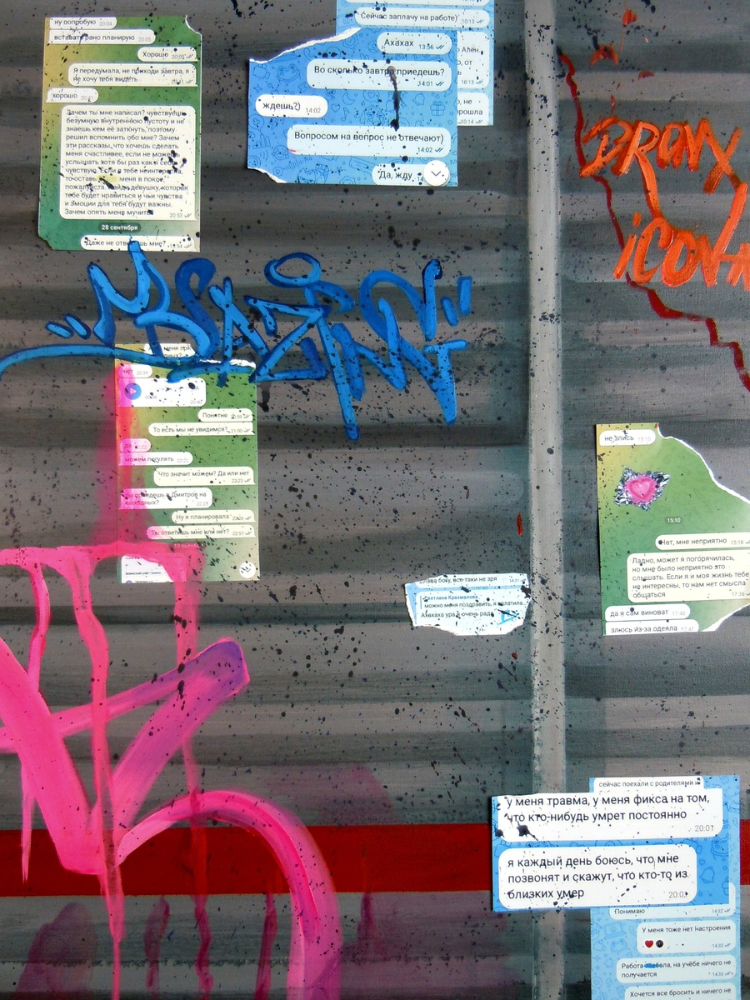
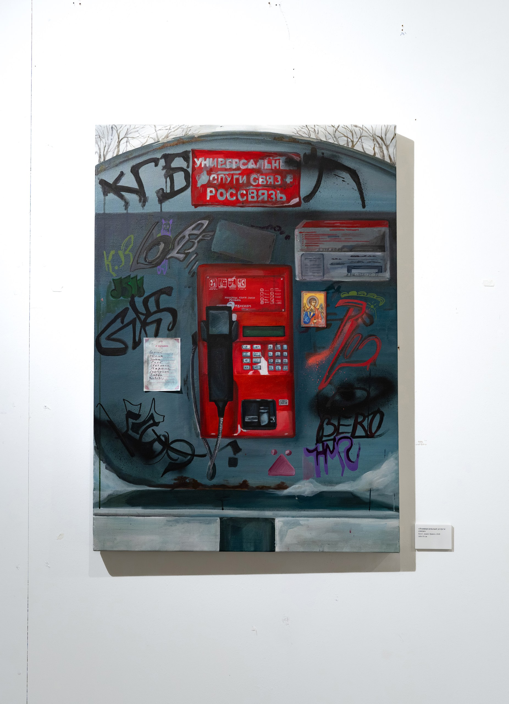
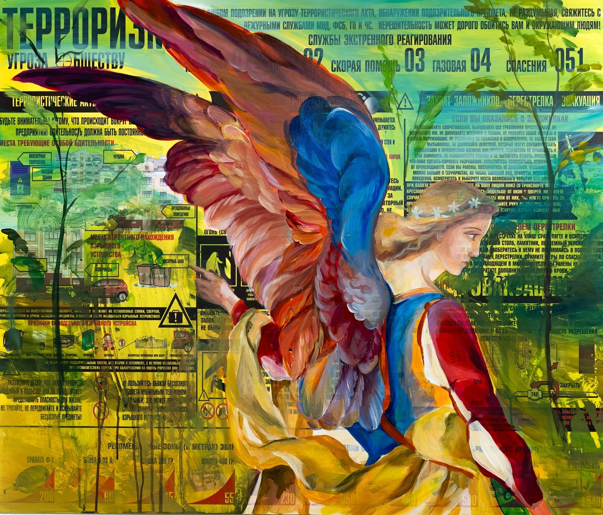
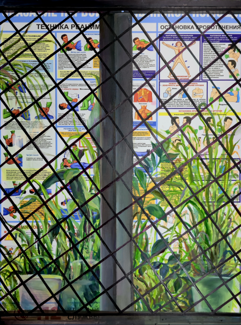
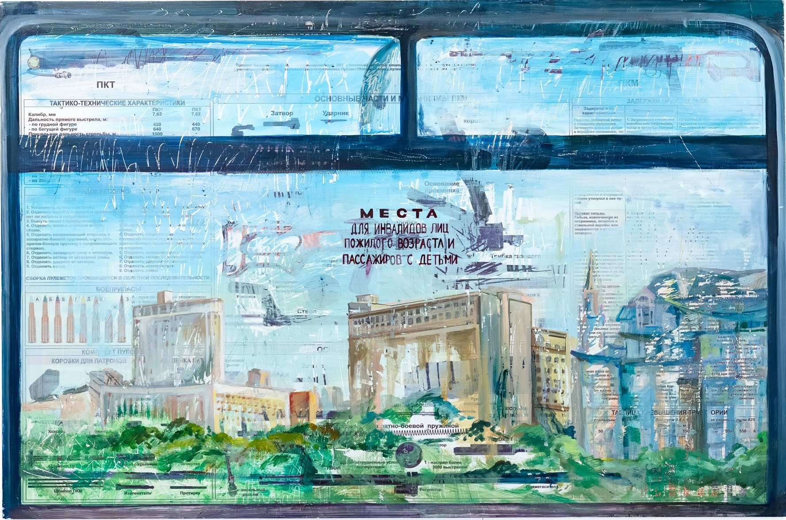
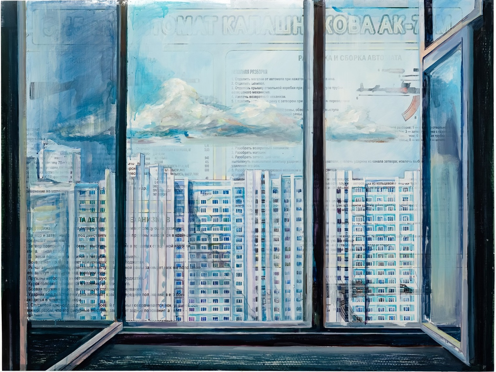
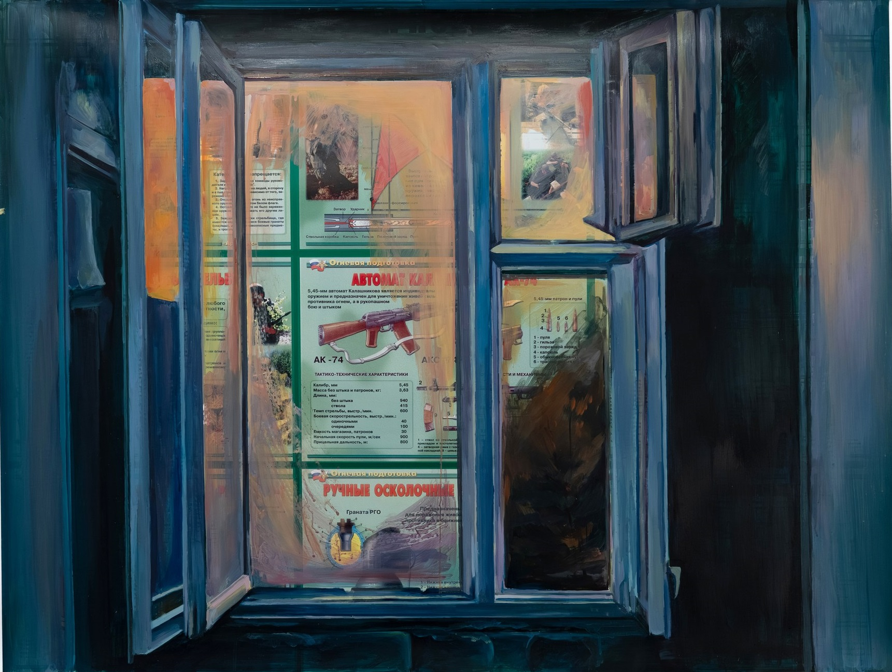

Малые частности

Описание
В работе с помощью красок изображена старая и потертая «доска почета» с лицами неизвестных людей. В нарисованное пространство внедрены распечатанные фотографии моего тела. Масштаб холста приближен к реальным размерам общественных досок объявлений, а манера рисования реалистична. Фотографии тела перекликаются с нарисованными персонажами по цвету.
Такое сочетание развивает тему деконструкции публичного пространства и его нормативных кодов.

Описание
Данная работа сочетает в себе живописное изображение, выполненное красками на холсте, и вклеенные листы бумаги с заметками из личного дневника: записями снов и письмами возлюбленному. Рисунок объявлений выполнен очень подробно и детально, что делает его визуально приближенным к вклеенным элементам. В результате интимное незаметно вторгается в публичную стену. В работе хотелось соотнести и сопоставить кодифицированный язык уличных объявлений и прямую экспрессию интимного опыта.

Описание
В живописное изображение дорожного знака интегрированы настоящие снимки УЗИ моего малого таза. Дорожный знак выполнен в ярких, местами люминесцентных цветах. Снимки органично сливаются с окружающим пространством и теряются на фоне. Таким образом медицинский объект может совершить акт визуализации сокрытого.

холст, фотобумага, акрил,
50×70 см, 2025
Описание
Работа представляет собой коллаж живописного изображения стандартизированного забора вдоль железнодорожных путей и вклеенных фотографий со скриншотами моих личных переписок с близкими людьми. Забор как символ разделения и запрета становится носителем самых личных диалогов, стирая грань между внешним барьером и внутренним миром.

Описание
В работе преобладают два цвета — красный и серый. Красный телефон помещён в невзрачное серое окружение, а также в центр композиции, что делает его главным объектом картины. В живописное изображение органично внедрены готовые объекты — небольшая покупная икона и специальная церковная записка «О здравии». Таким образом, то, что считается глубоко сакральным помещается в иллюзию общественного места. В этой работе для меня интересен конфликт между приватной сферой веры и публичной средой.

Описание
На ярко-желтом печатном информационном стенде с чёрными контрастными буквами изображён ангел с европейской фрески. Цвета ангела близки к цветам стенда — они так же ярки и контрастны.
Различие между изображением и фоном проявляется на смысловом уровне: стенд как готовый объект информирует об опасности терроризма, выполняя государственную функцию предупреждения. Ангел же для меня становится образом сокровенных, «духовных» мыслей и впечатлений. Такое сочетание для меня выступает интерпретацией двойственного состояния человека.

Описание
Основой для картины служит покупной стенд, информирующий о различных способах оказания медицинской помощи. На заднем плане изображена оконная рама с решёткой и горшками с цветами, которые как будто находятся за стеклом видимого зрителям окна. Белый фон информационного стенда создаёт на картине иллюзию глубины, так как выглядит как освещённое пространство. Это светлое пространство закрывается тёмной решётчатой оконной рамой. Сюжет картины подсмотрен в жизни — запечатлено реальное окно неизвестного государственного учреждения.

Описание
В данной работе в роли холста для живописи выступает информационный учебный стенд, рассказывающий об устройстве пулемёта Калашникова. На его поверхности акриловыми красками изображена условная оконная рама общественного транспорта и московский пейзаж за ней. Красочный слой на работе повреждён, местами содран, что позволяет зрителю увидеть основу «холста». Таким образом, в картине раскрываются сразу три плана, несколько слоёв пространства. Подобное визуальное решение может указывать на участие государства в конструировании повседневной жизни.

Описание
Данная картина продолжает сюжетную линию предыдущих работ. Основой выступает плакат «Автомат Калашникова АК-74 – разборка и сборка». На нём красками изображены открытая деревянная оконная рама и лирический пейзаж с панельными домами. Колорит выполнен в голубых, чистых и спокойных тонах, что создаёт смысловой контраст с содержанием плаката, местами проглядывающего сквозь прозрачные слои краски. Мирное, почти медитативное созерцание бытового пейзажа сталкивается с сухой военной инструкцией. В работе мне хотелось создать напряжение, путем столкновения уязвимости обыденной жизни и скрытым за ней насилием.

Описание
Картина также выполнена на информационном плакате. Плакат «Огневая подготовка» рассказывает о различных видах оружия. Большую часть работы занимает нарисованное открытое окно в подъезде. Зритель смотрит из подъезда в открытое пространство, в котором через дымку заката проявляется информация стенда. За счёт разницы в светлоте живописного рисунка и плакатного фона удаётся создать иллюзию пространства, которая помогает передать идею многоплановости и сконструированности повседневности.